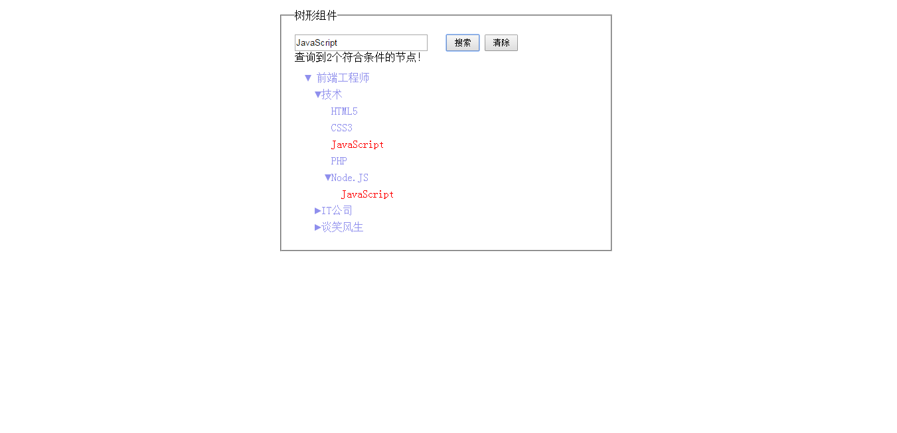
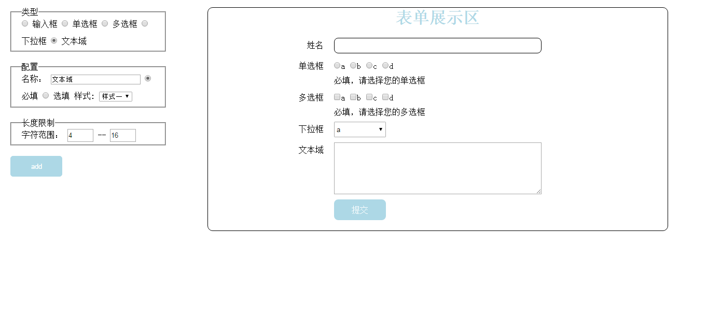
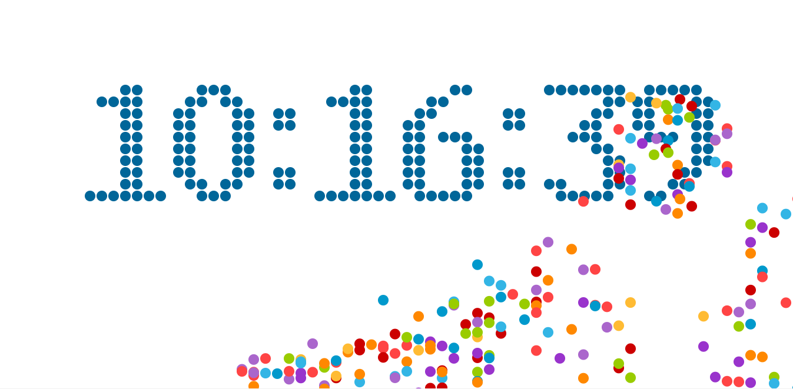
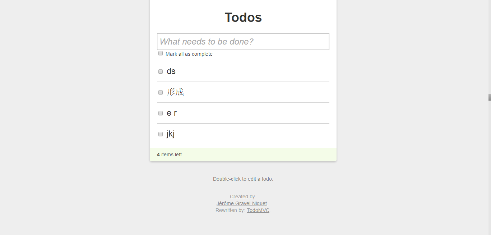
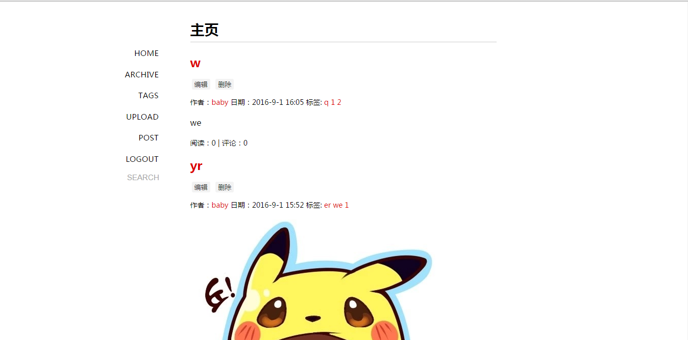

-
- Basic info. 基本信息
- 个人信息: 李晴 / 女 / 21岁
- 教育经历: 本科 / 厦门大学电子科学系 / 2016年应届生
- 英语水平: CET-6 / IELTS 6.5
- GitHub: www.github.com/momogugu
-
- Experience. 项目经验
个人项目
-
百度IFE前端技术学院课程（2016.4 - 2016.7） 源代码
学习百度IFE前端技术学院春季班课程，并独立完成其中的任务
-
Task 0001 源代码 Demo
按照给定设计稿的各项字体、布局、内外边距等样式，合理运用 HTML 语义化标签，在 Chrome 中实现了一个常见的技术产品官网的页面架构及样式布局。
-
Task 0002 源代码 Demo
树形组件，实现了一个微型 JS 库，其中包括对原生 JavaScript 数据类型及语言基础、DOM 、事件等的操作和封装，并运用这个 JS 库实现了节点的折叠与展开，增加与删除，按照内容进行节点查找，并且把找到的节点进行特殊样式呈现，如果找到的节点处于被父节点折叠隐藏的状态，则需要做对应的展开。
 -
Task 0003 源代码 Demo
表单工厂，实现以 JavaScript 对象的方式定义表单及验证规则，实现可以自动生成表单的展现、交互、验证的逻辑，在一个页面上配置验证不同样式的表单

-
-
HTML5 Canvas 倒计时时钟（2016.7） 源代码 Demo
利用 HTML5 的 Canvas 元素使用 JavaScript 在网页上绘制弧线和圆，完成电子钟的绘制效果。根据小球自由落体的物理模型，实现小球的滚动效果，完成进一步的性能优化和屏幕自适应处理。
 -
todolist（2016.8） 源代码 Demo
根据 backbone 的 MVC 框架，定义数据结构（ models 和 collection ）和用户接口（ views 和 routers ），实现根据不同事件添加、删除、修改统计任务的功能，自动完成对前端页面的渲染，用 webpy + sqlite 来完成后台及对数据库简单的增删改查。
 -
blog（2016.8） 源代码
一个简单的 blog，后端使用 NodeJS + express + MongoDB 实现，完成了对 MongoDB 数据库简单的增删改查。
 -
Questionare（2016.11） 源代码
一个简易的问卷管理系统，前端使用 react + redux + Ant Design(UI), 后端使用 NodeJS + koa + MongoDB 实现， 完成了用户注册、用户登录、新建问卷、查看问卷、管理问卷等功能。
-
- Skill. 技能清单
Web前端
-
HTML / CSS
能够编写语义化的 HTML，了解 HTML5 Canvas
熟悉 CSS，能够实习基本的布局，了解 CSS 预处理器 Sass
-
JavaScript
熟悉原生 Javascript 中 DOM 编程基本原理，event，prototype，constructor 等基础概念
了解 Javascript 在各个浏览器下的兼容问题，能脱离 jQuery 等类库编写基本的原生 Javascript 代码
能运用模块化、面向对象的方式编程
了解 RequireJS jQuery backbone 的使用
-
其他
能够使用 Chrome 调试工作调试代码
能够使用 Sublime Text 进行前端页面手工式的开发
了解前端安全、性能优化方面的一些知识
后端
-
对后台 nodejs + mongodb + express 的服务器搭建
了解 Linux 开发环境、 Linux 服务器环境搭建部署
其他
-
是一个有趣的人，热爱生活
会科学上网，有尝试用 VPS 搭建一个 wordpress 博客网站
学习能力强，以上绝大多数的技能都是自学修得的，善用 google 获取想要的资料
日常使用 Sublime Text 进行开发，了解 git 基本使用方法，也乐于尝试新工具